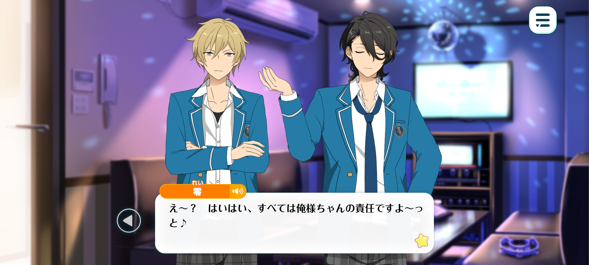
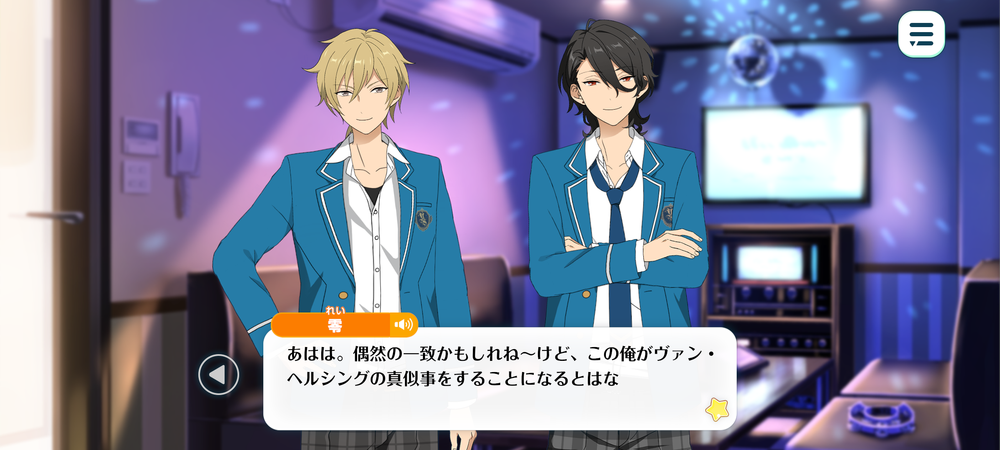

BIOHAZARD — Chapter 10



Kaoru: So, to sum up, everything’s Sakuma-san’s fault.
Rei: Eh~? Yupyup, everything’s lil’ ol’ me’s fault~♪
(My attitude was so bad!?)
Koga: (Even now I get fooled by the old man shit you do, but your manners 'n attitude are still bad sometimes.)
(Puttin’ yer feet up on desks, actin’ like you couldn't give less of a damn about anything.)
Rei: (Ritsu has some rather bad habits when it comes to his feet, too, you see. Wouldn't it be lovely if we could turn this into a heartwarming tale of two brothers sharing the same habits? Something along the lines of, ‘Oh, aren't those two such close siblings?’ ♪)
Koga: (True. Ricchii sometimes kicks me ‘n goes ‘move out the way’.)
Rei: (I suppose we're rather highly regarded within our clan, so no one ever thought to correct us for such discourteous behaviour.)
Koga: (Hmph. You're way too soft on Ricchii. You’re suppose t’be his older brother yet you can’t even tell him off.)
Adonis: (Shh. Our past selves seem to be discussing something important.)
Kaoru: After that Deadmanz live the other day, Sakuma-san took off overseas without telling anyone a thing—
Rei: When work calls. Most of my activities are overseas to begin with.
Kaoru: That’s all good and all but, you left all your devotees here and have started getting up to all sorts of trouble.
Keito: Devotees?
Koga: W-What you lookin’ at me for?
Kaoru: Ahaha. At that Deadmanz live, Sakuma-san ended up drawing all those delinquents into his own circle, didn't he?
Rei: Ah right. Well, that’s just how things go. So, what’s the problem?
Kaoru: The problem is, there seems to have been a bit of a misunderstanding.
They apparently think they're the companions of Sakuma Rei, a superstar the whole world can be proud of.
Rei: Ah–
Kaoru: And now the ones who've gotten carried away are calling themselves “vampires”. They've been causing trouble all over the place and repeatedly eating at restaurants without paying, making a nuisance of themselves.
They're going around saying things like, “We're underlings of the one and only Sakuma Rei! Show some respect! Stand back!”
Just to make sure, you're not the one putting them up to this, are you, Sakuma-san?
Apparently, these “vampires” have also been saying things like, “If you've got a problem, take it up with our boss, Sakuma Rei!”
Rei: Are you stupid? What do I gain by makin’ them do shit like that? They’re just morons who’ve got the wrong idea ‘n are doin’ whatever they want.
They’re attention whores tryna ride on my coattails…Haa, this whole thing is weirder than I thought it was.
Kaoru: I thought as much. Those guys are multiplying just like actual vampires, drawing other delinquents into their ranks. It's gotten pretty out of hand.
Based on the size and their vibes, they're practically like the colour gangs you used to hear about a while back.[1]
If they're eating without paying or causing a scene right outside our shops, that's interfering with our businesses. Business is already bad for shops around here, so even something like that can deal us a serious blow.
You understand, right? It's a matter of cleaning up your own mess.
These guys showed up because of you, Sakuma-san, so you're the one who should do something about them. The nearby shops have pooled their money together and put up a reward, too.
By the way. I’m the one telling you this because we go to the same school, but I want you to understand that this request is actually coming from all the shopkeepers around here.
Of course, if push comes to shove, I’ll call the police. A lot of the parents of kids that go to Yumenosaki are influential people—
–so I don’t know if the police will actually do anything.
It’ll be way easier for all of us if you just sort it out yourself.
Could you ‘exterminate’ those ‘vampires’ for me? ♪

Rei: Ahaha. Might jus’ be a coincidence, but I never thought I’d be out here actin’ like Van Helsing.
Keito: If anything, you’re more like Count Dracula.
Rei: …Welp, I get the situation. I thought that's how it would go down so I’ve been a bit proactive.
Look. I feel kinda bad for him, since he's been left sittin’ here all alone, but I've already caught the culprit behind the whole incident.
Adonis: …
Keito: I don't understand. What do you mean Otogari is the culprit?
Rei: I'm tellin’ you, this guy's the leader of those “vampires”.
To use Count Dracula as an example, you drive a white wooden stake through his heart to stop him movin’, then cut off his head to kill him.
And it’ll be this guy’s head we’ll be cuttin’.
So basically, if we deal with him, everythin’ will be right as rain. Simple, ain’t it ♪
Adonis: …
- カラーギャング or ‘colour gangs', were groups of 'hoodlums' whose members all wear clothes in the same colour. Its associated with Ikebukuro in the late 1990s)